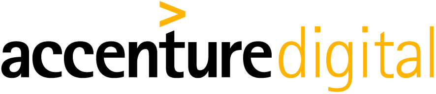
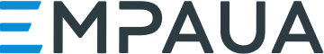
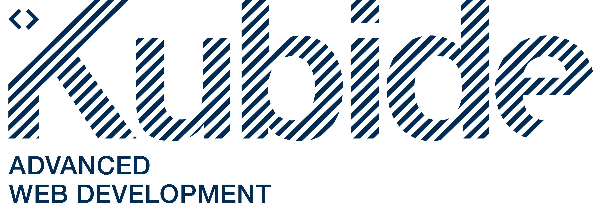
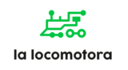
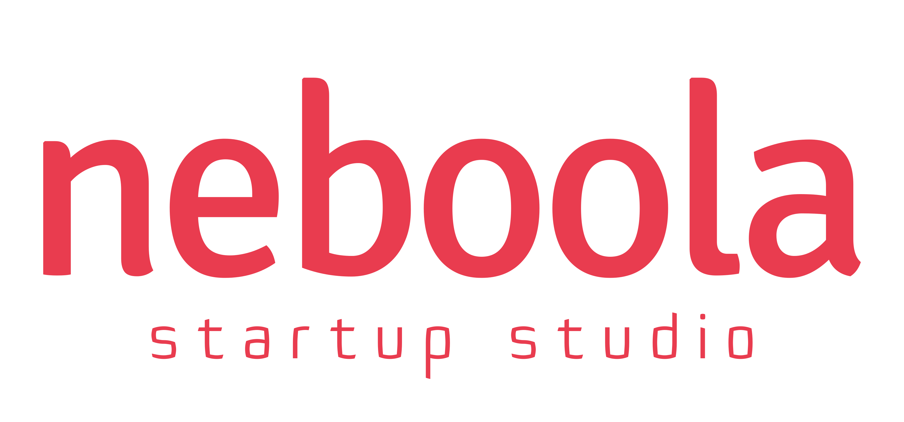
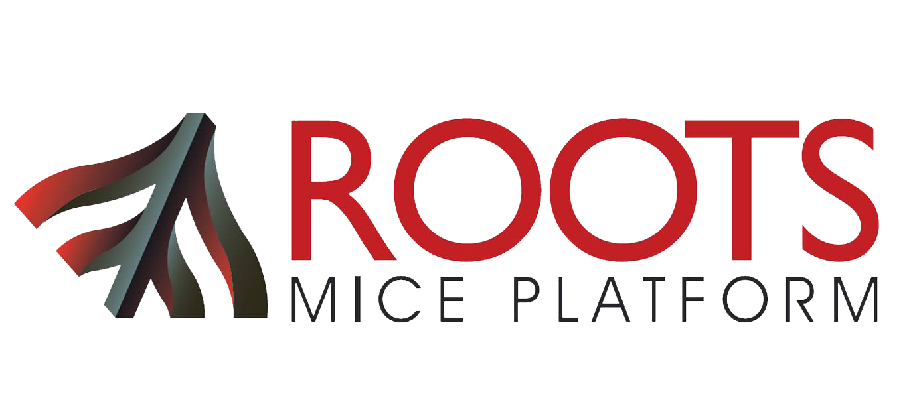
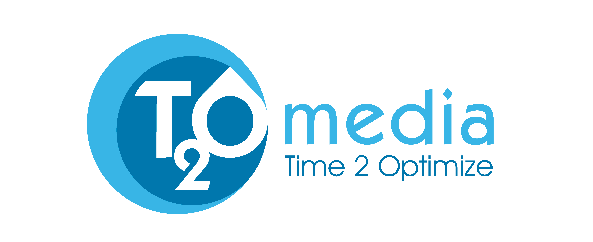
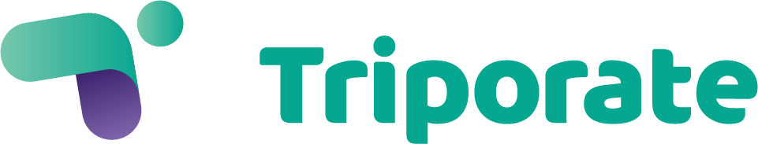

Tenemos el talento
front-end que tu empresa necesita
Adalabers de la promoción Clarke trabajando en Kairós DS
¿Por qué contratar a una adalaber?
Hoy en día hay más puestos de trabajo relacionados con la programación que profesionales para cubrirlos.
En Adalab queremos revertir esta tendencia, formando a mujeres como programadoras front-end. Nuestras alumnas destacan por su motivación, compromiso y ganas de trabajar en empresas que apuesten por el talento junior y la diversidad.
Equipos más diversos generan mayor crecimiento y procesos más innovadores, ¿a qué esperas para aumentar tu equipo con una adalaber?.
Manuel y Lucía Head of SW Develop.
VP of Operations
en Kairós DS
VP of Operations
en Kairós DS
"Queríamos tener una nueva generación de gente con talento y lo encontramos en las graduadas de Adalab. Tienen una actitud y una motivación brutales."
Manuel Fosela Head of Software Development
en Kairós DS Lucía Pablos VP of Operations
en Kairós DS CONTRATA
¿Cómo puedo contratar a una adalaber?
Es proceso es muy sencillo: analizamos tus necesidades, te ofrecemos la oportunidad de conocer cómo trabajan nuestras alumnas a través de una colaboración real con ellas y te facilitamos los perfiles que mejor encajan en tu empresa.
Además, a través de la firma de nuestro convenio de colaboración, tu empresa se convertirá en miembro de nuestra red de empresas colaboradoras, potenciando su visibilidad como empresa comprometida con la diversidad.
Leer más sobre el programa de inserción CONTRATAEl perfil de una adalaber
Perfil técnico
- Maquetación: HTML5, CSS3, Flexbox, CSS Grid, SASS, Bootstrap
- JavaScript (ES6) y servicios web (APIs) de terceros
- Control de versiones con Git
- Creación de SPAs sencillas con React
- Manejo de Slack, Trello, GitHub, Atom, Gulp, Terminal, Linter, Zeplin
Perfil profesional
- Alta capacidad de trabajo en equipo
- Comunicación efectiva
- Motivación por seguir aprendiendo
- Capacidad de autoaprendizaje
- Experiencia en el desarrollo de proyectos usando metodologías ágiles
Marta Aguilar. Alumna de Adalab, y ahora, programadora en Kairós DS.
Programa de voluntariado corporativo
Para Adalab es muy importante la involucración de nuestras empresas colaboradoras en todo el proceso formativo de las alumnas, por ello hemos diseñado un programa de voluntariado corporativo que permitirá a tu empresa conocer a nuestras alumnas y aportar activamente en la reducción de la brecha de género en el sector de la programación.
Programa de mentoring
Charlas y
talleres
Profesores/as asistentes
Proyecto colaborativo final
Aquí puedes conocer más detalles sobre nuestro programa de voluntariado corporativo
Más informaciónYa cuentan con adalabers en sus equipos









Otras cosas que seguro quieres conocer
- ¿Qué coste tienen los servicios de Adalab?
-
Nuestras empresas colaboradoras pagan a Adalab una cuota única de 990 € + IVA por alumna contratada. Esta cuota cubre los servicios de análisis de las necesidades de la empresa, envío de los CVs que mejor se adapten a la empresa, y asesoramiento durante el proceso de selección y contratación. El importe de esta cuota se abona a través de dos pagos: el 15% (150€) al momento del envío de los CVs y el 85% restante (840€) una vez se formalice la contratación de la alumna. Si finalmente el proceso de selección iniciado por la empresa no concluye en contratación, el segundo pago de 840€ no deberá ser abonado.
- ¿Qué implica la firma del convenio de colaboración?
-
A través del convenio de colaboración la empresa firmante se convierte automáticamente en empresa colaboradora de Adalab y pasa a formar parte de su red de empresas comprometidas con la diversidad. Esto supone participar de las acciones que Adalab lleve a cabo para dar visibilidad y promocionar a todas las empresas que comparten su misión de crear diversidad. La firma del convenio de colaboración no implica compromiso de contratación. En él se incluyen las obligaciones que tanto la empresa como Adalab asumirían en caso de iniciar un proceso de selección para las alumnas de Adalab.
- ¿Qué pasa si la/s alumna/s contratadas no encajan en la empresa?
-
En el convenio de colaboración se regula que si la alumna abandona la empresa durante los primeros 6 meses por motivos no aducibles a la empresa, o si la empresa manifiesta que la alumna o alumnas contratadas no están teniendo un correcto desempeño profesional durante esos primeros 6 meses, Adalab facilitará nuevos perfiles de alumnas a la empresa sin coste adicional.
- ¿Qué significa que Adalab sea una empresa social?
-
Adalab tiene la forma jurídica de una asociación sin ánimo de lucro. Nuestra misión es reducir la brecha de género en el sector de la programación y reducir el desempleo, y todas nuestras acciones van dirigidas a la concreción de ambos objetivos. Lo que prima en la toma de decisiones de la Junta Directiva de Adalab es alcanzar el mayor impacto social, consiguiendo que cada vez más mujeres accedan a oportunidades laborales de calidad, en un sector con proyección profesional, como el de la programación. Nuestro modelo de negocio está basado en conseguir la autosostenibilidad del proyecto, no tenemos ánimo de lucro y no repartimos dividendos, de forma que todos nuestros beneficios son reinvertidos íntegramente en el proyecto.
- ¿Cómo es la formación impartida en Adalab?
-
El programa formativo de Adalab está basado en el concepto “agile”. Durante 13 semanas, las alumnas pasan por un proceso formativo eminentemente práctico, muy intensivo y adaptado a la realidad laboral, que consta de 390 horas de formación presencial y 260 horas de autoformación. Este proceso se divide en 3 sprints y un hackathon. En cada sprint, las alumnas, divididas en equipos, deben hacer frente a retos de aprendizaje individuales y grupales. La formación técnica se complementa con formación en desarrollo profesional, a través de la cual las alumnas adquieren las habilidades necesarias para aportar valor en una empresa.
Nuestro equipo docente está compuesto de programadores/as en activo, en contacto con la realidad laboral del momento y expertos en habilidades de comunicación, trabajo en equipo y marca personal.
Nuestro temario ha sido construido a través de la red de empresas colaboradoras, para asegurar que responde a las necesidades del mercado laboral y está en constante cambio y evolución. Queremos que nuestras alumnas aprendan lo que tu empresa necesita.
- ¿De verdad las alumnas están listas para empezar a trabajar tras 13 semanas de formación?
-
Sí, y es tan verdad, que el 94% de todas las alumnas graduadas de Adalab, una vez terminado el curso intensivo, han empezado a trabajar como programadoras front-end. Actualmente más de 70 empresas confían en Adalab para buscar el talento que necesitan.
- ¿Adalab trabaja con el modelo de becas?
-
Las alumnas de Adalab buscan una primera experiencia laboral como programadoras, aportando además de los conocimiento adquiridos en el Curso Intensivo, formación y experiencia previas en diferentes ámbitos profesionales. Son profesionales que han decidido reinventarse e iniciar una nueva andadura en el sector de la programación. Por ello, todas las alumnas que se insertan en empresas pertenecientes a la red de empresas colaboradoras de Adalab, lo hacen a través de contratos laborales. En su mayoría se trata de contratos indefinidos y si son contratos temporales pedimos que sean de al menos 6 meses, y bajo la lógica de que la empresa quiera que la alumna continúe en la empresa (siempre que la relación funcione y ambas partes estén satisfechas). En Adalab no firmamos con las empresa convenios de cooperación educativa y por tanto no trabajamos con el modelo de prácticas académicas o extra académicas.
¿Quieres ser tú la próxima empresa que apueste por el mejor talento front-end?
CONTRATA